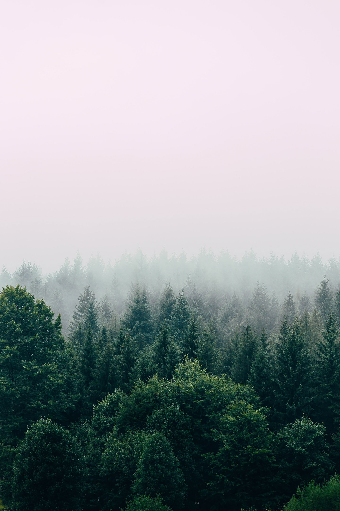

The importance of forests cannot be underestimated. We depend on forests for our survival, from the air we breathe to the wood we use. Besides providing habitats for animals and livelihoods for humans, forests also offer watershed protection, prevent soil erosion and mitigate climate change. Yet, despite our dependence on forests, we are still allowing them to disappear.
How have forests affected your life today? Have you had your breakfast? Travelled to work in a bus or car? Sat on a chair? Made a shopping list? Got a parking ticket? Blown your nose into a tissue? Forest products are a vital part of our daily lives in more ways than we can imagine.
Over 2 billion people rely on forests. Forests provide us with shelter, livelihoods, water, food and fuel security. All these activities directly or indirectly involve forests. Some are easy to figure out - fruits, paper and wood from trees, and so on. Others are less obvious, such as by-products that go into everyday items like medicines, cosmetics and detergents.
Habitats for biodiversity and livelihood for humans. Looking at it beyond our narrow, human – not to mention urban – perspective, forests provide habitats to diverse animal species. They are home to 80% of the world’s terrestrial biodiversity, and they also form the source of livelihood for many different human settlements, including 60 million indigenous people.
 Back to Course Home Page